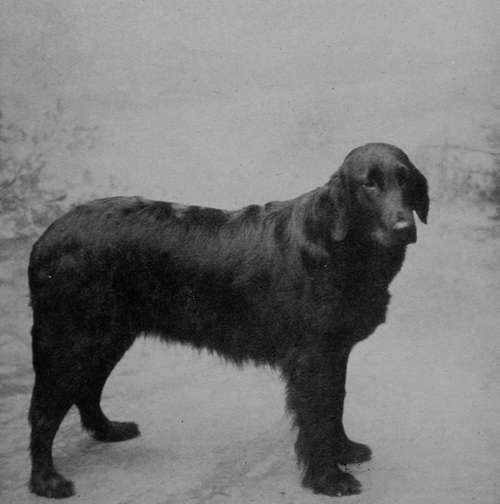
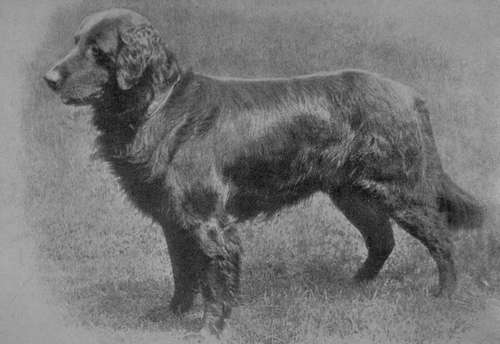
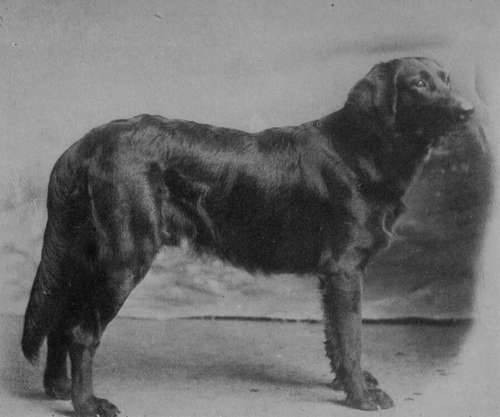
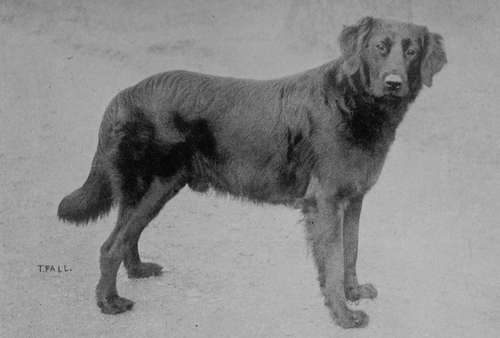

Chapter IV. Retrievers. (A) Flat Coated
Description
This section is from the book "Sporting Dogs. Their Points And Management In Health, And Disease", by Frank Townend Barton. Also available from Amazon: Sporting Dogs; Their Points and Management in Health and Disease.
Chapter IV. Retrievers. (A) Flat Coated
There is good evidence to show that the Retriever is what may be termed a " made " breed, and that his present state of perfection is the outcome of careful selection during the last fifty years or thereabout, the latter thirty years of this time having been devoted by enthusiastic sportsmen to raise the standard of the Retriever to the highest standard of excellence, and no one did more in this respect than the lamented late President of the Kennel Club, S. E. Shirley, Esq., Ettington Park, Stratford-on-Avon.
Most of Mr Shirley's exhibits were an ornament to the show bench, and not only were they ornamental, but equally useful in the field, this gentleman being a keen sportsman and one of the most successful breeders and exhibitors of Flat-coats in the annals of this or any other time.
The Retriever is gradually coming more and more into favour, and will continue to do so when his usefulness becomes better known. It is a variety of dog that stands little chance of becoming spoiled by interbreeding, as in the case of so many Spaniels.
Mr Cartwright's Flat-coated Retriever Champion Colwyn Clytie.
Typical Flat-coated Retriever.
To the sportsman, the Retriever can claim advantages over the Pointer, Setter and Spaniel, but unless very thoroughly handled during his training, he is not of much service. A perfectly broken Retriever—more especially if rich in show-bench points — should readily bring sixty or seventy guineas at least, and cheap at that price.
Coat
Should be perfectly flat — not wavy as formerly—of an intense raven blackness,* glossy, and the hair of good length and dense, more especially over the tops of the shoulders and along the back, but the contour ought not to be interfered with.
White hair upon any part of the body, head, tail, or extremities, is not desirable, and should, in the author's opinion, tell against the animal. We are aware that the presence of a few white hairs upon the chest is not regarded as being of much importance. Still, there is no gainsaying that to be perfect in all points, the Retriever must not have such.
Head
Ought to possess the highest degree of intelligence. The occipital dome to be wide, of medium height, becoming much narrower as the nose is approached ; the latter to be black.
* Liver-coloured flat and wavy coated specimens are not at all uncommon, though not generally preferred.
Ears
Small, carried close to cheeks, and thin cartilage covered with soft hair, yet free from feather at the margins.
Many Retrievers are very faulty here, a touch of the Spaniel element sometimes being in evidence.
Eyes
To be of a deep hazel. Any tendency towards the so-called " snipy " nose is a defect.
Chest
Deep, but not wide, and well covered with soft, black hair.
Neck
Somewhat short, but thick.
Back And Loin
A long, strong back and loin, slightly depressed about midway, with a beautiful rise towards the hind-quarters. These latter should be well muscled and covered by the same flatness of coat.
Limbs
Shoulders, strong and oblique, and forearm big-boned and muscular ; of medium length ; pasterns short and strong ; feet of proportionate size.
From the hinder face of the fore-limb there should be a sparing amount of feather, not of sufficiency to interfere with the dog when swimming.
When at rest the tail is carried down, but under excitement straight out, though slightly below the level of the back. Any tendency to curling of it, is very faulty.
Many capital working Retrievers carry their tails very badly, indicative of inferior breeding. What is equally important—no matter whether it be the Flat-, or Curly-coated variety—in a Retriever, is that of being good-tempered, obedient, persevering, quick to find, to remain at heel until given the word of command, and to have a very tender mouth.
Flat-coated Retrieves Danehurst Rocket.
Flat-coated Retriever Busy Marquis (Property of Mr E. H. Blagg).
Flat-coated Retriever Dog.
If a dog is too headstrong, he will never make a good Retriever, running out directly a shot is fired. Must respond with alacrity to his master's word of command, in short, perfect obedience.
An " unstable " Retriever is not a useful dog; in fact, an annoyance. The chief faults of a Flat-coated Retriever are—too Setter-like in appearance, wavy coat, short coat, Spaniel-like ears, rusty tint, white hair, bad temper, disobedience, too long on the leg, too short on the leg, too much of the Newfoundland element, etc., etc.
Continue to:
- prev: International Gundog League. Pointer And Setter Society Rules For The Trial Meetings
- Table of Contents
- next: (B) The Curly Coated